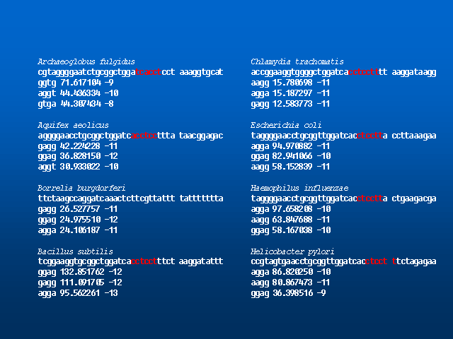
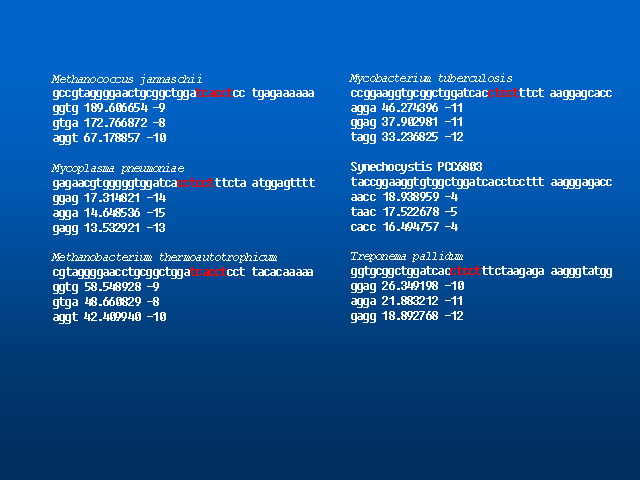

Sequence features surrounding ORF start sites of completely sequenced bacteria
Most statistically significant quadrets and its Z-scores are
shown with DNA sequences around 3' terminal of 16S rRNA.
If you want to see sequence features surrounding M.genitalium,
click HERE.


Go back to my research page